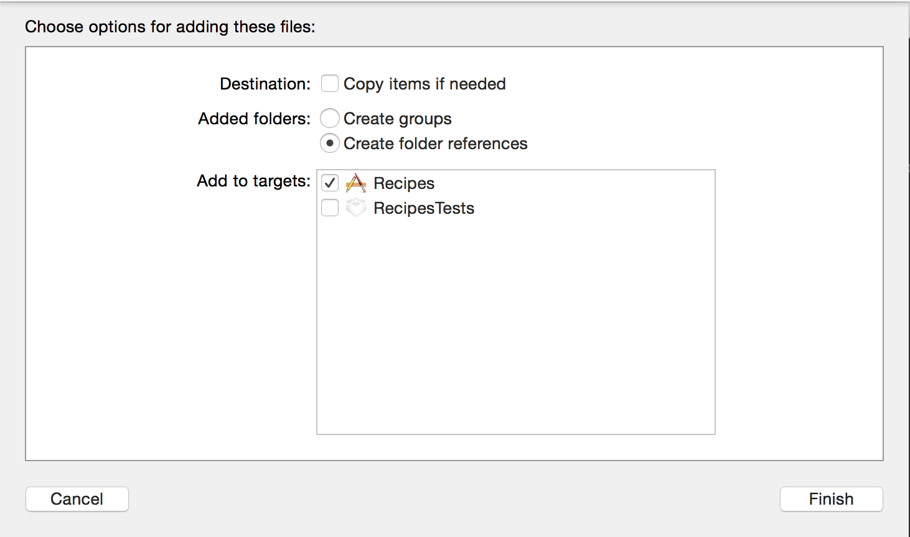

We don't cook food here.
We cook...er...code!
web directory outside in the Finder (outside of Xcode)web directory into Xcode
As you've imported the web directory into Xcode, any files or folders you add under web will automatically show up in Xcode, and, loading of relative assets (e.g. css files) will work like normal.